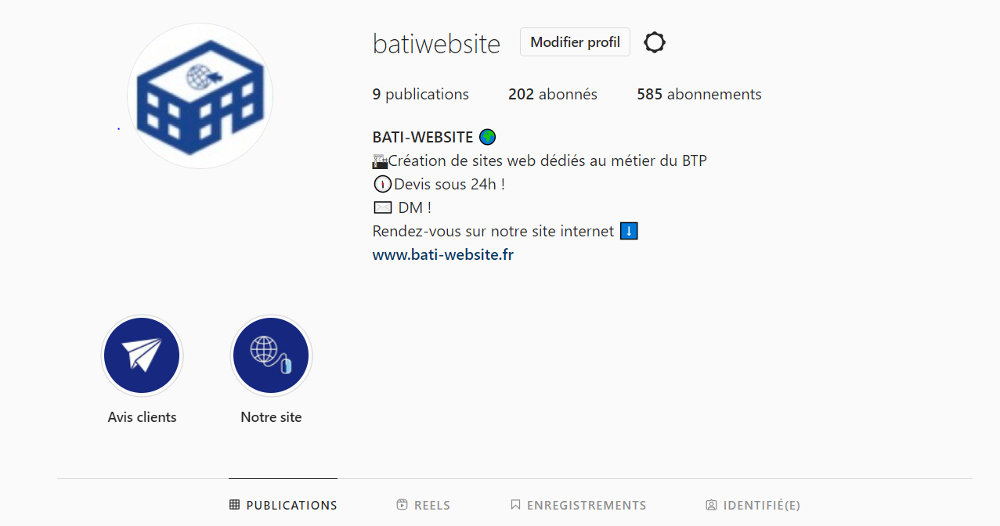
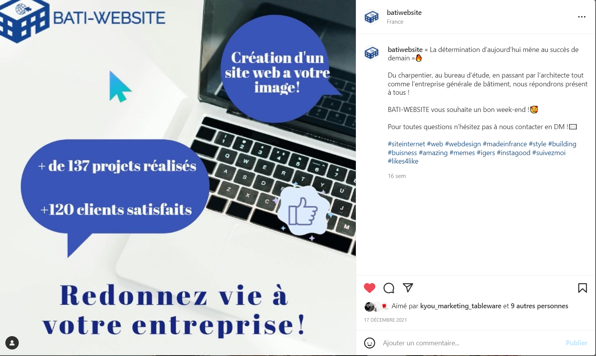
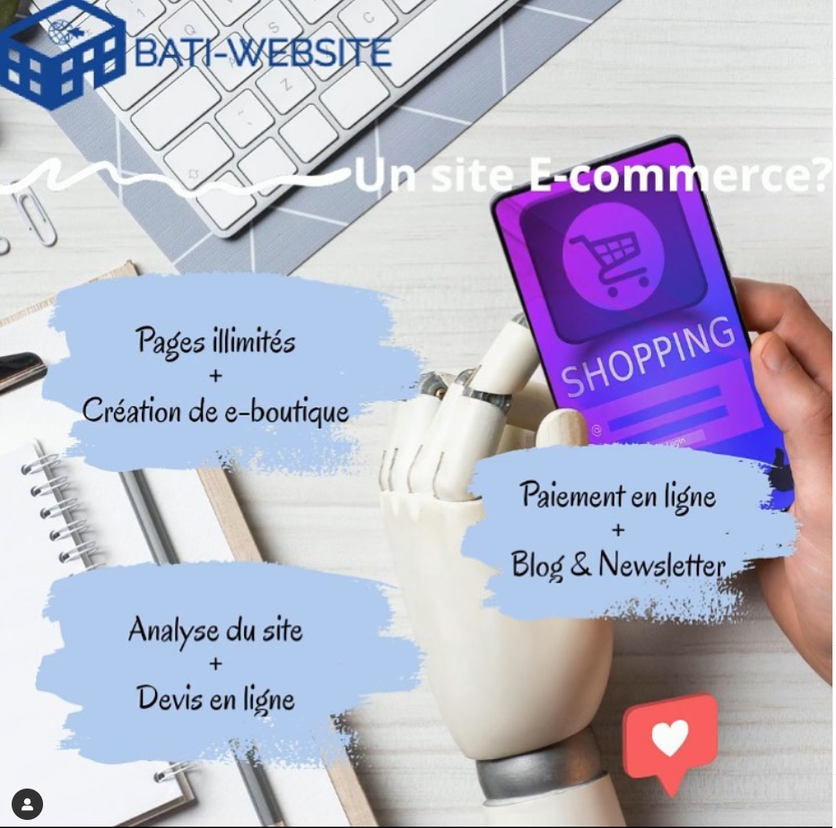
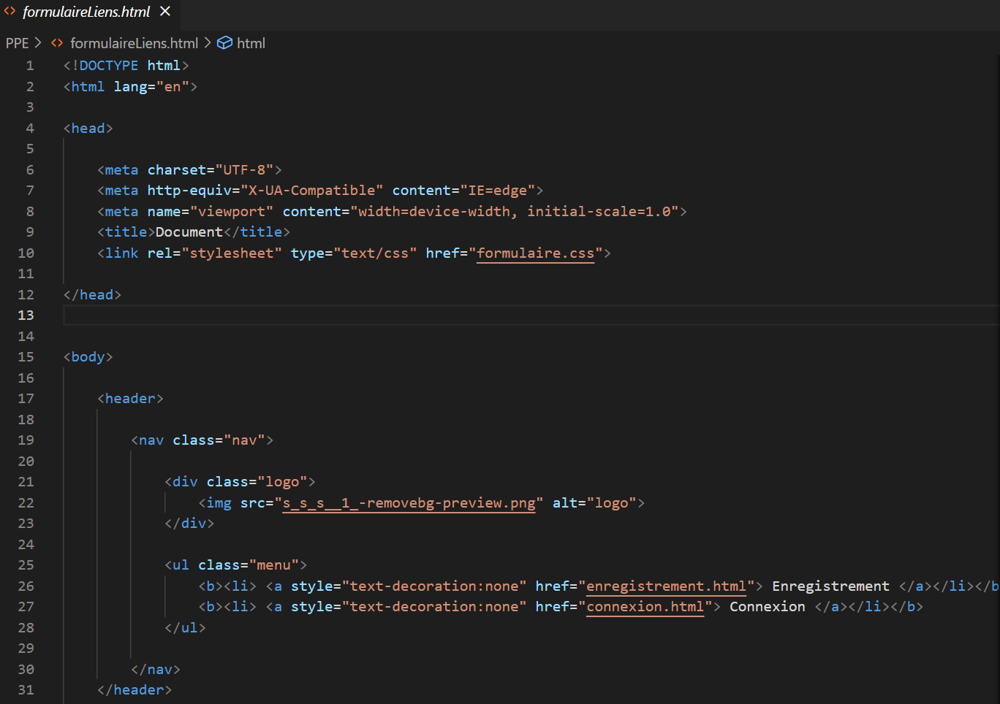
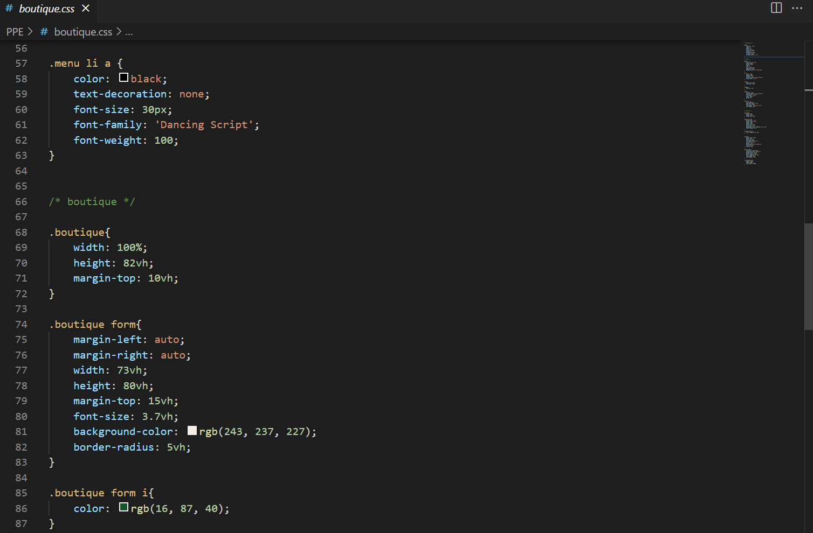
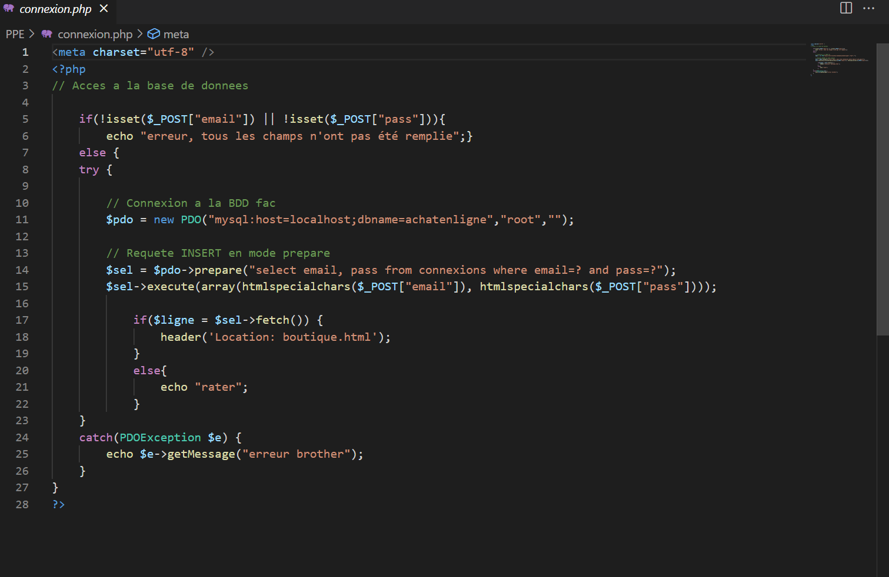
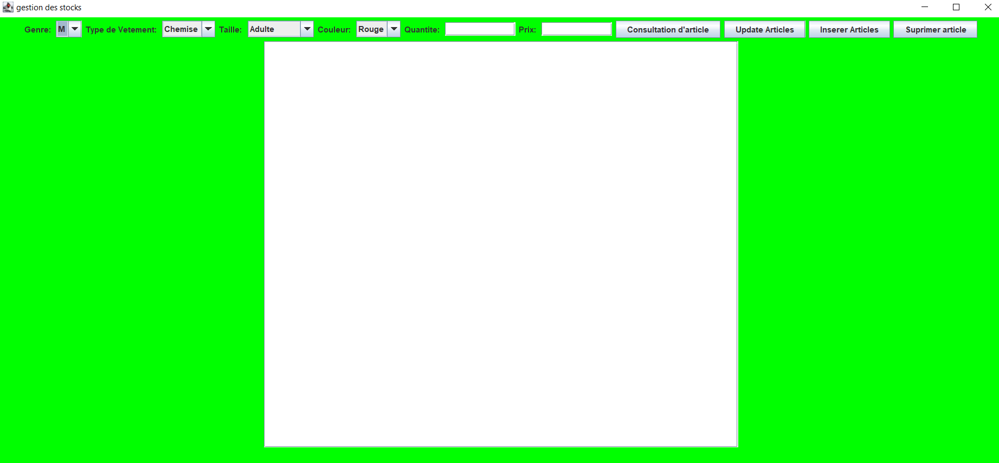
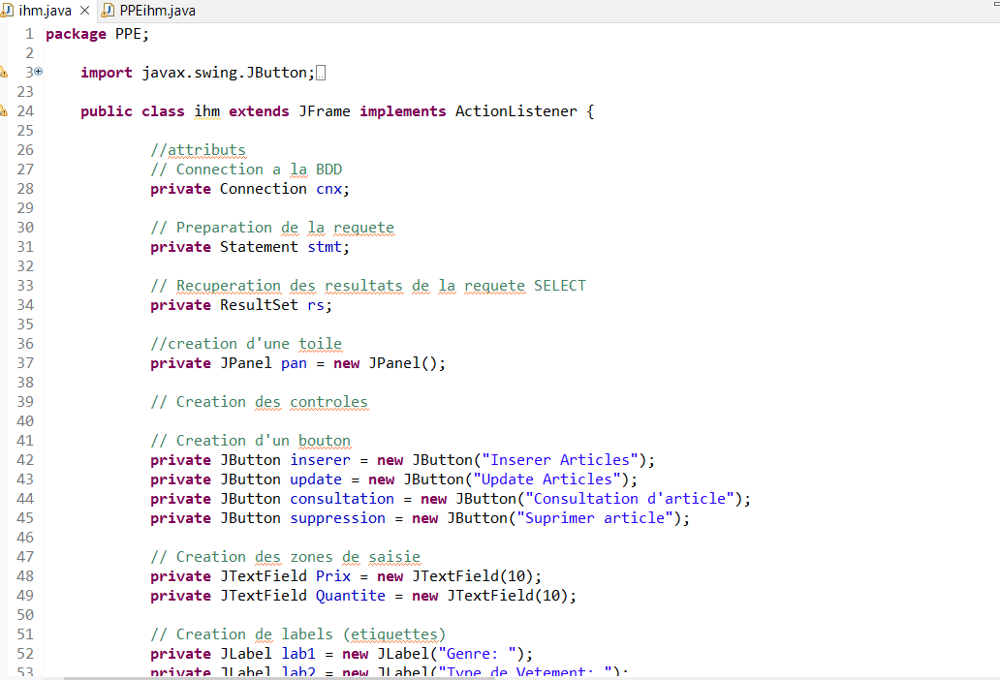

Mes réalisations!
Bienvenue sur ma page de réalisation !
Durant mon année de BTS SIO (option slam), j'ai eu l'occasion de réaliser un stage de 2 mois
ainsi qu'un projet personnel encadré "PPE".
Bienvenue sur ma page de réalisation !
Durant mon année de BTS SIO (option slam), j'ai eu l'occasion de réaliser un stage de 2 mois
ainsi qu'un projet personnel encadré "PPE".
Du 13 décembre 2021 au 18 février 2022, j’ai effectué un stage au sein de l’entreprise BATI-WEBSITE située à Mantes la Jolie.
BATI-WEBSITE est une entreprise réalisant des sites internet principalement dédiés aux entreprises du bâtiment.
Au cours de ce stage, j’ai eu l’opportunité de créer et gérer les réseaux sociaux de l'entreprise.
Réaliser des nouveaux posts 2 à 3 fois par semaine et entrer en contact avec de potentiels clients,
dans un but précis, faire connaitre l'entreprise et attirer la clientelle.



Durant mon stage, j’ai également eu l’opportunité de découvrir le métier de Développeur-WEB.
En effet j'ai du créer deux pages dites "template" afin de les présenter aux clients et leurs proposer des
modèles déja prêts pour leurs futurs sites.


Le lien de notre projet "POSSIBLEMENT"
Ce projet réalisé par groupe de trois est composé de deux parties, il est basé sur une simulation d'un site développé en JAVA/Php/Html/CSS.
Un premier programme chargé de simuler un site d’achat de vêtements en ligne .
Un deuxième programme permettant au gérant du site de modifier le contenu du site (réassort ou suppression d’articles...)
Ces 2 programmes partagent la même base de données ' achatenligne '.
Le premier programme écrit en Php/Html/CSS est composé de trois parties (trois formulaires) :
La première partie correspond à la connexion au site par un visiteur
La deuxième partie correspond à l’enregistrement d’un visiteur sur le site
La troisième partie correspond au contenu du site lui-même c’est-à-dire la table contenant les produits (informations sur les vêtements).



Le deuxième programme écrit en JAVA est composé d’une interface graphique permettant au gérant de modifier le contenu de son site,
de consulter son stock, d'insérer des articles ou de supprimer des articles.

